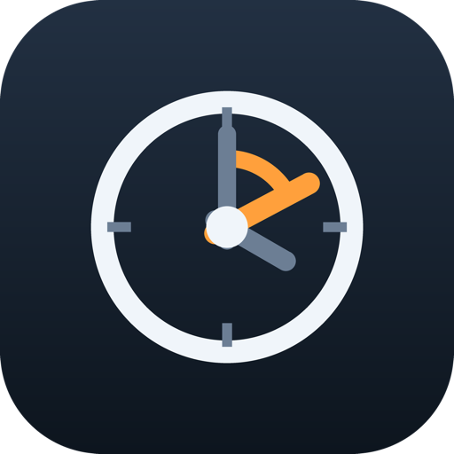
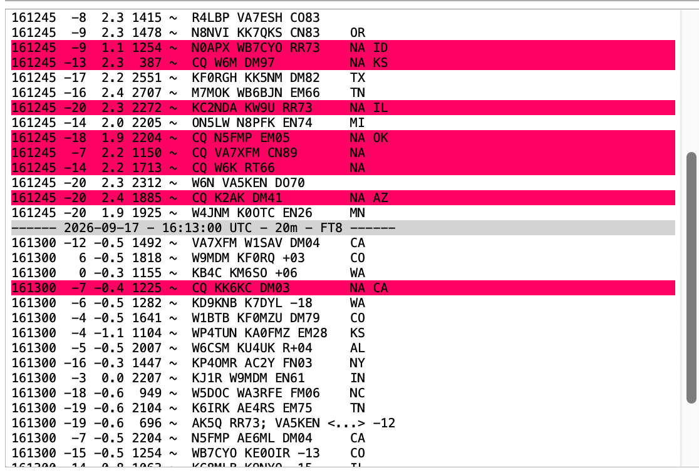

a different clock for every rig
A macOS menu bar app that runs several WSJT-X instances at once, each on its own
independently adjustable clock.
Nothing else on the Mac moves — system time stays exact.
Two rigs running, each shifted on its own — the icon turns green while any instance is up.
Offsets are nanosecond integers. Walk a rig ±5 s in 0.1 s steps while it runs — no restart, no touching system time.
Up to six instances, each with its own --rig-name and its own control file.
Leave the rig name blank to launch WSJT-X's default configuration.
jt9 is spawned per decode cycle and inherits the same shifted clock as the
GUI that started it.
FT8 transmits in 15-second slots. Decodes past roughly ±2.5 s of DT fall off the edge — which is what a clock a couple of seconds out costs you.

Drag the slider to see what that costs, cycle by cycle.
| UTC | dB | DT | Freq | Message |
|---|
A dylib injected with DYLD_INSERT_LIBRARIES, using dyld's
__DATA,__interpose section — which rewrites bind targets in every loaded
image except the one declaring the interpositions, so the library calls the real functions by
their ordinary names.
out = anchor + (in − anchor) × rate + offset
anchor is that clock's value at injection, so rate
diverges from the moment the program starts rather than from the epoch.
| Interposed symbol | Reached by |
|---|---|
gettimeofday | C code, and CoreFoundation's own clock source |
clock_gettime | modern C/C++, Go, Rust, Swift — CLOCK_REALTIME |
clock_gettime_nsec_np | Apple's preferred fast path |
time | legacy C |
mach_absolute_time, mach_continuous_time | monotonic clocks, plus approximates — opt-in only |
NSDate, Swift's Date and
CFAbsoluteTimeGetCurrent come along transitively, because CoreFoundation reads the
clock through gettimeofday. Interposing CF as well double-shifts it —
a real bug this project hit, and removed.
# build the shim, the tools and the menu bar app make make menubar open ab6a-timeShift.app # make an injectable copy of WSJT-X, once bin/timeshift-resign /Applications/wsjtx.app "/Applications/wsjtx shift.app"
# shift one program back 90 minutes bin/timeshift --offset -90m -- ./yourprogram # adjust a running process through a shared control file bin/timeshift-ctl init /tmp/rig1.ctl --offset 0 bin/timeshift --control /tmp/rig1.ctl -- ./yourprogram & bin/timeshift-ctl nudge /tmp/rig1.ctl --offset 100ms
Two mechanisms stand between you and an injected dylib, and they are easy to conflate:
| Mechanism | What it does | Waived by |
|---|---|---|
| Hardened runtime | Marks the process restricted; dyld strips every DYLD_* variable, silently |
allow-dyld-environment-variables |
| Library validation | Admits only dylibs signed by the same team, or platform binaries | Same team — or disable-library-validation |
With a Developer ID, timeshift-resign signs
the WSJT-X copy and the shim with one identity. Library validation is then satisfied by the team
match, the hardened runtime stays on, and the result is notarizable — only the
dyld-environment waiver is needed. Without a certificate it falls back to ad-hoc, drops the
hardened runtime and disables library validation instead.
Run bin/timeshift-check <binary-or-.app> before anything else. It
reports exactly which of the two mechanisms is in the way, and which team the shim must be
signed by.
open -a. open
hands off to launchd, which starts the app in a clean environment where
DYLD_INSERT_LIBRARIES never arrives.tccutil reset the WSJT-X bundle ID. The copy shares it
with your original install, so you would revoke the working app's permission too.mach_absolute_time only perturbs Qt's timers.ALL.TXT all record the shifted time. Correcting a wrong clock — that's the
point. Experimenting — log to a copy.Nothing outside the process moves. File timestamps, timer firing, log timestamps and certificates checked in other processes all stay on real time.
Offsets jump, they don't slew. Lowering the offset makes the program's wall
clock run backwards. For a gradual machine-wide correction, the call you want is
adjtime(2).
A narrow unshifted window at startup. Clock reads from inside libSystem's own
initializers pass through untransformed — deliberately. That context has no thread-local
storage, a non-re-entrant os_once, and no malloc zone yet; all three crash a shim
that tries to do real work there.